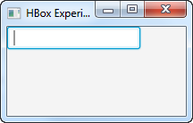
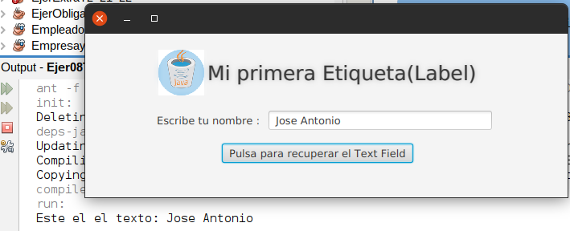

Un control JavaFX TextField permite a los usuarios de una aplicación JavaFX introducir texto que luego puede ser leído por la aplicación. El control JavaFX TextField está representado por la clase javafx.scene.control.TextField.
Crear un campo de texto
Un control TextField se crea instanciando un objeto de la clase TextField. Por ejemplo:
TextField textField = new TextField();Agregar un campo de texto a la escena (Scene)
Para que un TextField de JavaFX sea visible, el objeto TextField debe añadirse al escenario gráfico. Esto significa añadirlo a un objeto de escena o como elemento secundario de un layout adjunto a un objeto de escena.
Por ejemplo aquí se añade un campo de texto JavaFX al gráfico de escena:
import javafx.application.Application;
import javafx.scene.Scene;
import javafx.scene.control.TextField;
import javafx.scene.layout.HBox;
import javafx.stage.Stage;
public class TextFieldExperiments extends Application {
@Override
public void start(Stage primaryStage) throws Exception {
primaryStage.setTitle("Ejemplo de TextField ");
TextField textField = new TextField();
HBox hbox = new HBox(textField);
Scene scene = new Scene(hbox, 200, 100);
primaryStage.setScene(scene);
primaryStage.show();
}
public static void main(String[] args) {
Application.launch(args);
}
}Y el resultado:

En Scene Builder arrastraremos el control (TextField) a nuestra escena.
IMPORTANTE: añadir un id al control en la sección code del TextField, por ejemplo idNombre
Obtener el texto de un TextField
Podemos obtener el texto tecleado en un TextField utilizandoel método getText() que devuelve una Cadena (String).
Un ejemplo completo: que muestra un campo de texto y un botón y que lee el texto tecleado en el campo de texto cuando se hace clic en el botón y lo muestra en la salida OUTPUT estandard.
import javafx.application.Application;
import javafx.scene.Scene;
import javafx.scene.control.Button;
import javafx.scene.control.TextField;
import javafx.scene.layout.HBox;
import javafx.stage.Stage;
public class TextFieldExperiments extends Application {
@Override
public void start(Stage primaryStage) throws Exception {
primaryStage.setTitle("HBox Experiment 1");
TextField textField = new TextField();
Button button = new Button("Click to get text");
button.setOnAction(action -> {
System.out.println(textField.getText());
});
HBox hbox = new HBox(textField, button);
Scene scene = new Scene(hbox, 200, 100);
primaryStage.setScene(scene);
primaryStage.show();
}
public static void main(String[] args) {
Application.launch(args);
}
}
En un modelo MVC y Scenne Builder:
- tendremos los tres ficheros (principal, controlador y vista)
- En el controlador debemos recuperar el TextField por su id y tendremos un método que asociaremos al evento de hacer click sobre el botón
public class FXML_Controller implements Initializable {
/**
* Initializes the controller class.
*/
@FXML
private TextField idNombre;
@Override
public void initialize(URL url, ResourceBundle rb) {
// TODO
}
@FXML
public void onClickBoton(ActionEvent actionEvent){
// código asociado al evento click sobre el botón
System.out.println("Este el el texto: "+idNombre.getText());
}
}- Y en la Vista asociamos el método onClickBoton al evento On Action del botón

Configuración del texto de un campo de texto
Podemos configurar el texto de un TextField usando su método setText(). Esto suele ser útil cuando necesita establecer el valor inicial para un campo de texto que forma parte de un formulario. Por ejemplo, editar un objeto o registro existente. Un ejemplo simple de cómo configurar el texto de un campo de texto JavaFX:
textField.setText("Valor inicial");